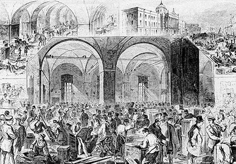
Petersburg. Customs House. Mid-1800s. Xylograph. (Lotman and Pogosian, Velikosvetskie obedy, p. 238) [full resolution image]
Image 97
Workers clearing the Nevskii Prospekt of snow at night
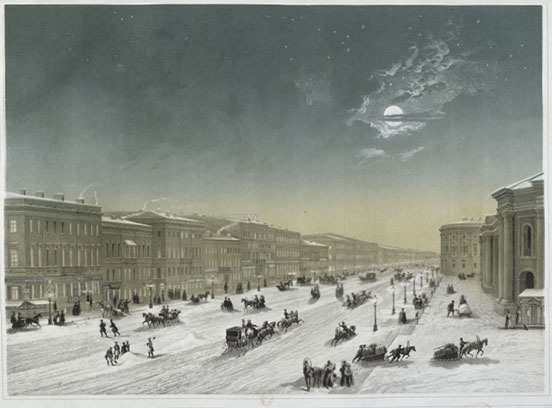
Louis Julien Jacottet (1806–1880) and Charles Claude Bachelier. Nevskii Prospekt by Moonlight. 1855–1859. Lithograph from a drawing by Joseph Charlemagne (1824–1870). 45 x 63 cm. State Museum of the History of St. Petersburg. [full resolution image]
Image 98
The return of Empress Aleksandra Fyodorovna from Palermo in 1846 was celebrated by a full illumination of the Nevskii Prospekt and adjacent streets.
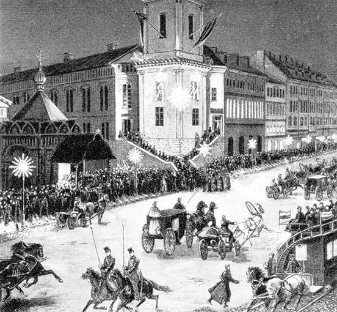
“A holiday on the Nevskii” (Èleonora Fradkina, Zal Dvorianskogo sobraniia Zametki o kontsertnoi zhizni Sankt-Peterburga [The Assembly Hall of the Nobility: Notes on the Concert Life of St. Petersburg] [St. Petersburg: Kompozitor, 1994], no page number) [full resolution image]
Image 99
View of the Isaac floating bridge from St. Peter’s Square (Senate Square) to Vasilievskii Island, showing St. Isaac’s Cathedral, the statue of Peter the Great, and the Synod and the Senate, with the arch leading into Galernaia Street between them
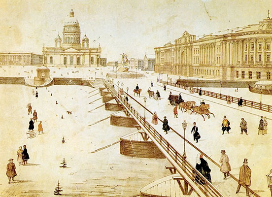
Vasilii Sadovnikov (1800–1879). View of the Isaac Floating Bridge Senate Square and Isaac Square in Winter. 1830s. Lithograph. Private collection. [full resolution image]
Image 100
Equestrian statue of Peter the Great, with a writhing snake being trampled by the horse’s hind hooves, and Peter, dressed in a toga, pointing with his right hand
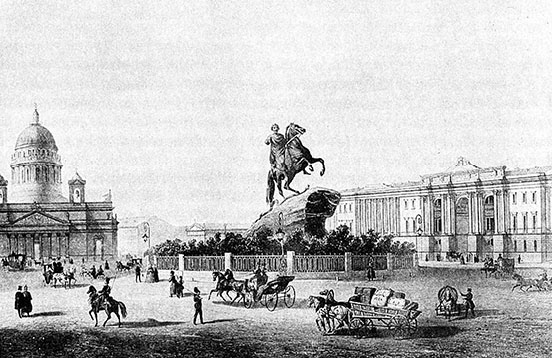
Senate Square. 1850s. Lithograph from a drawing by Joseph Charlemagne (1824–1870). (Lotman and Pogosian, Velikosvetskie obedy, p. 38) [full resolution image]
Image 101
View of the English Embankment from Peter’s Square, showing the Laval’ house on the corner, before construction of the Senate and Synod was begun. Boats on the Neva River: on the right a Baird steamship; center and left, painted gondolas.
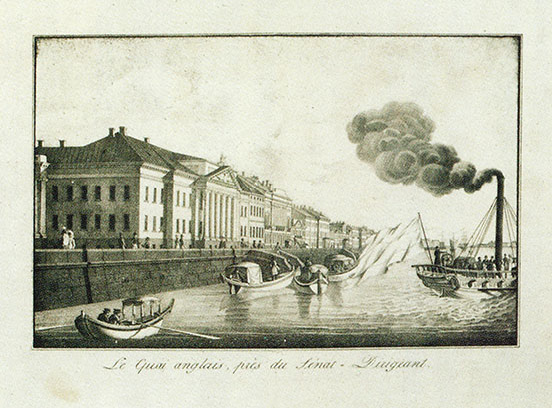
View of the English Embankment from Peter’s Square. 1826. Lithograph. 34.5 x 49.5 cm. State Museum of the History of St. Petersburg. [full resolution image]
Image 102
View of the English Embankment with the English Church visible through the rigging of one of Baird’s steamships
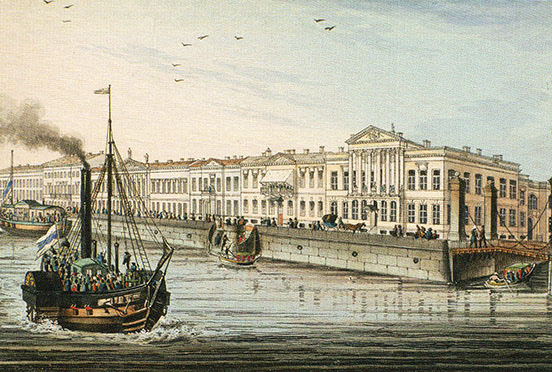
Karl Petrovich Beggrov (1799–1875). The English Quay. A Steamship on the Neva River. 1830s. From the cycle of lithographs “Views of Petersburg.” State Tret’iakov Gallery, Moscow. [full resolution image]
Image 103
View showing the middle section of the English Embankment
The other end of the English Embankment: on the right, a covered slip; on the left, one of Baird’s steamships
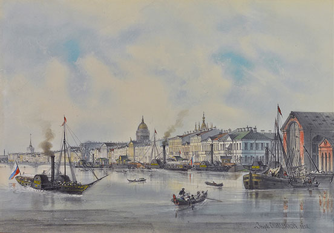
Joseph Charlemagne (1782–1861). The English Embankment on the Neva, St. Petersburg. 1858. Pencil and gouache. 30.5 x 42.5 cm. (12 x 16.7 in.). Private collection. [full resolution image]
Image 105
View of the St. Petersburg islands and the Neva showing the gaily painted gondolas in the foreground and one of Baird’s steamships
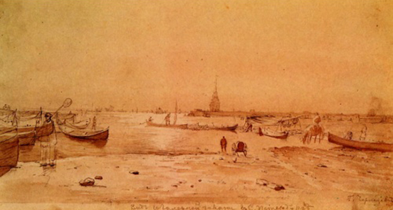
Grigori Grigorievich Chernetsov (1802–1865). View of Galernaia Harbor in St. Petersburg. 1820. Sepia. State Russian Museum, St. Petersburg.
Image 106
Anna Whistler was invited by Timothy Abraham Curtis to see a ship-launching.
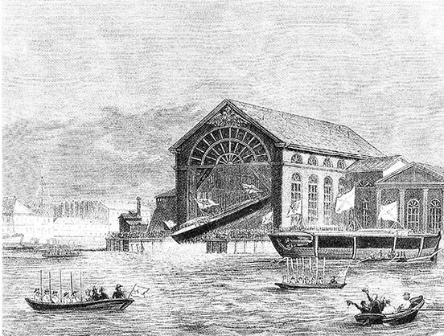
E. Anert and I. Carbonier. Covered Slip at the New Admiralty. 1837. (Shtiglits, Promyshlennaia arkhitektura Peterburga, no page number) [full resolution image]
Image 107
Anna Whistler mentioned a mild episode of flooding Neva water appearing in their street.
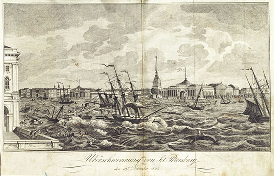
Flood in St. Petersburg, Russia, on 19 November 1824 (K.E. Rainold, ed., Erinnerungen an merkwürdige Gegenstände und Begebenheiten [Memories of Noteworthy Objects and Occurrences] [Vienna, 1825], facing p. 40) [full resolution image]
Image 107a
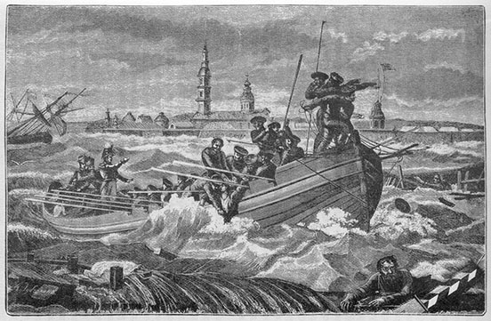
The Flood of 7 November 1824 [OS]. (V. Avseenko, comp. 200 let S.-Peterburga Istoricheskii ocherk200 Years of St. Petersburg: A Historical Essay) [St. Petersburg: S.-Peterburgskaia Gorodskaia Duma, 1903], p. 209) [full resolution image]
Image 108
The English Magazine on the left corner of the Nevskii Prospekt and Bol’shaia Morskaia Street
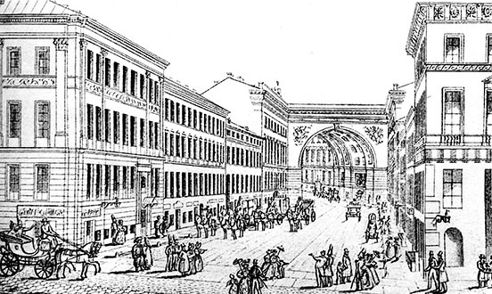
L. Tiumling. English Magazine on the Left Corner of Nevskii Prospekt and Bol’shaia Morskaia. 1830s. Engraving. (A.M. Gordin and M.A. Gordin, Byloi Peterburg Panorama stolichnoi zhizni [Bygone Petersburg: A Panorama of Life in the Capitol City] [St. Petersburg: Pushkinskii fond, 1995], p. 145) [full resolution image]
Image 109
Anna Whistler frequently walked or shopped on elegant animated Bol’shaia Morskaia Street
Bol’shaia Morskaia Street. 1850s. Lithograph from a drawing by Joseph Charlemagne (1824–1870). State Russian Museum, Moscow. [full resolution image]
Image 110
The English Church on the English Embankment as it would have looked when the Whistlers were communicants there. On the left is the main façade of the building of the church built by Giacomo Quarenghi; on the right is the façade of the building on the Galernaia Street side (architectural plan by F.K. Boltengagan, 1876)
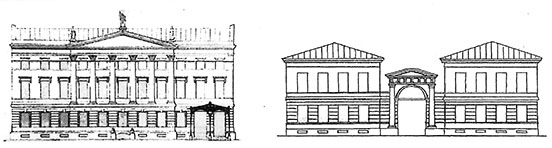
Feodor Karlovich Boltenhagen. Anglican Church (No 56). 1876. Drawings of the architectural design by Giacomo Quarenghi (1744–1817). (Solovieva, K prichalam, p. 238) [full resolution image]
Image 111
A photograph of the English Church on the English Embankment in the early 2000s, with the statues of the lions missing
Rubens’s Deposition from the Cross, which hung above the altar of the English Church at the time that the Whistlers were communicants there
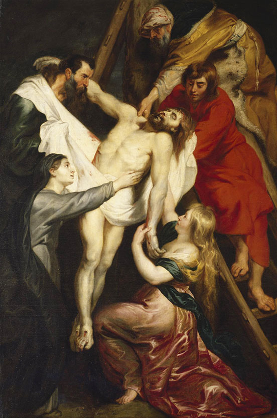
Peter Paul Rubens (1577–1640). Deposition from the Cross. 1617–1618. Oil on canvas. 297 x 200 cm. State Hermitage Museum, St. Petersburg (GE-471).
Image 113
Like all visitors, Anna Whistler and her party, guests of Colonel Todd, the envoy of the United States, were limited in what they could see of the Winter Palace, because the New Hermitage was being built from 1842 to 1852.
The Winter Palace, with the entrance to the Jordan Staircase, which Todd’s party ascended, visible on the side of the building
Imperial Winter Palace. Mid-19th century. Lithograph. (Perepiska Imperatora Aleksandra II s Velikim Kniazem Konstantinom Nikolaevichem. Dnevnik Velikogo Knaizia Konstantina Nikolaevicha [Correspondence of Emperor Alexander II and Grand Duke Konstantin Nikolaevich. Diary of Grand Duke Konstantin Nikolaevich] [Moscow: Terra, 1994], pp. 24–25) [full resolution image]
Image 115
The Jordan Staircase in the Winter Palace
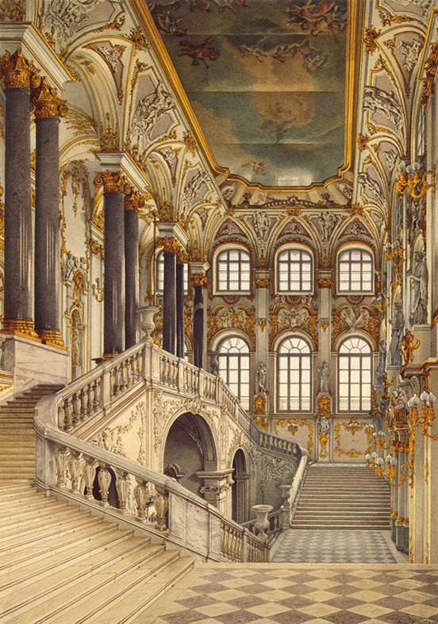
Konstantin Ukhtomsky (c. 1818 – c. 1880). Jordan Staircase. 1866. (A.N. Voronikhina, Vidy zalov Ermitazha i Zimnego Dvortsa [Views of the Salons of the Hermitage and the Winter Palace] [Moscow: Iskusstvo, 1983]) [full resolution image]
Image 116
View of Alexander (Palace) Square, showing the front of the Winter Palace, with the monument to Alexander I
The Winter Palace during the White Nights of summer
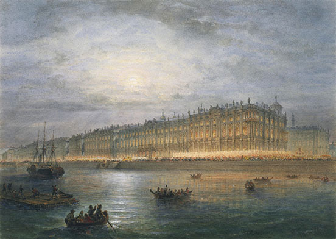
Vasilii Sadovnikov (1800–1879). Winter Palace by Night. 1857. Watercolor on paper; included in the series of drawings (13 sheets) “Court life in Gatchina in 1859.” 27.6 x 38.9 cm. State Hermitage Museum, St. Petersburg (OR-38952).
Image 118
The Admiralty, on Admiralty Square, where the Shrovetide fair was constructed
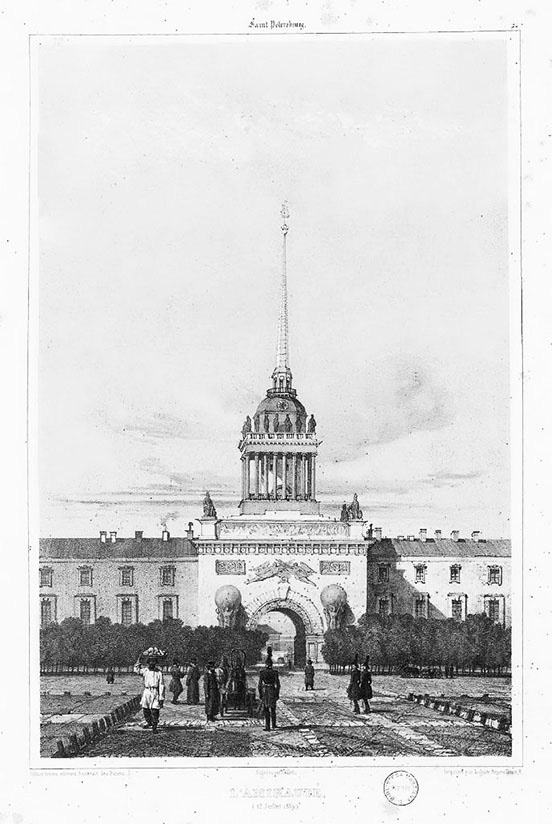
André Durand (1807–1867). The Admiralty. 1839. Lithograph. (de Démidoff, Voyage Pittoresque) [full resolution image]
Image 119
St. Isaac’s Cathedral was being built while the Whistlers were in Russia.
Jean Victor Adam (1801–1867). View of St. Isaac’s Cathedral in Scaffolding. 1845. Tinted lithograph from a drawing by Auguste de Montferrand (1786–1858). 30.5 x 43.2 cm. State Hermitage Museum, St. Petersburg (ERG-33095).
Image 120
View of the north façade of St. Isaac’s Cathedral from Admiralty Boulevard
Philippe Benois. St. Isaac’s Cathedral from Admiralty Boulevard. 1845. Lithograph from a drawing by Auguste Montferrand (1786–1858). 48.5 x 63.5 cm. State Museum of the History of St. Petersburg. [full resolution image]
Image 121
Alexander Koritskii told Anna Whistler that he was assisting K.P. Briullov while the latter was painting the cupola frescos and ceiling in St. Isaac’s Cathedral in 1843–1847.
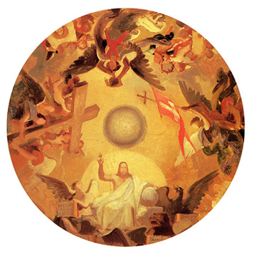
Karl Briullov (1799–1852). Christ in Majesty. 1843–1847. Sketch for a ceiling painting in St. Isaac’s Cathedral. Oil on canvas. Tondo, dia. 65 cm. State Russian Museum, St. Petersburg. [full resolution image]
Image 122
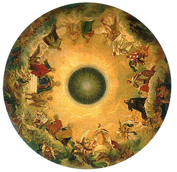
Karl Briullov (1799–1852). Mother of God in Glory Surrounded by Saints. 1843–1847. Initial composition for the plafond of the central cupola of St. Isaac’s Cathedral in St. Petersburg. State Russian Museum, St. Petersburg. [full resolution image]
Image 123
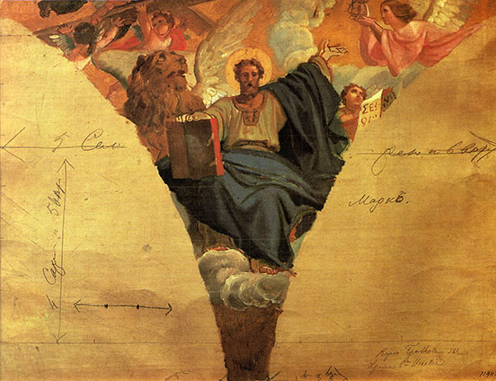
Karl Briullov (1799–1852). TheEvangelist Mark. Sketch for a pendentive painting in St. Isaac’s Cathedral. Oil on canvas. 35 x 48 cm. State Russian Museum, St. Petersburg. [full resolution image]
Image 124
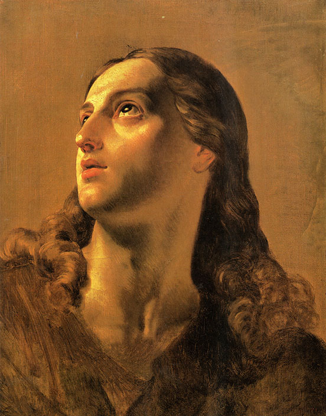
Karl Briullov. St. John the Divine. 1843–1847. Study for a ceiling painting in the central dome of St. Isaac’s Cathedral. Oil on canvas. 53 x 42 cm. State Russian Museum, St. Petersburg. [full resolution image]
Image 125
Anna Whistler sometimes attended the evening service at the British and American Congregational Church (British and American Chapel), of which the Gellibrands and Ropeses were communicants.
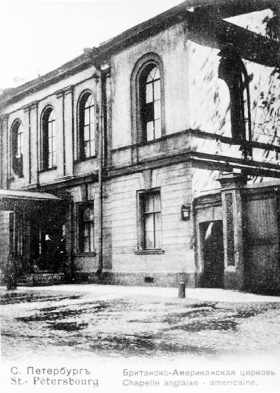
British and American Congregational Church of St. Petersburg. c. 1890. Photograph. Courtesy of David Whitford, Social Media Manager, Anglican Church in St Petersburg. [full resolution image]
Image 126
Kazan Cathedral on the Nevskii Prospekt, to which Deborah Whistler was invited in 1844 to hear the Russian all-night Easter service
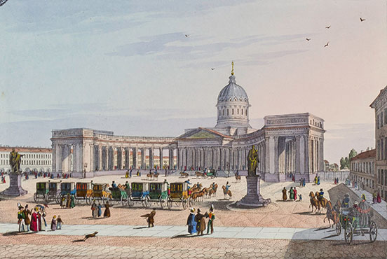
Karl Beggrov (1799–1875). Kazan Cathedral, with the Statues of Barclay de Tolly and Koutouzoff. Bibliothèques de Nancy, France (Collection Victor Poirel, Rés. 4276). [full resolution image]
Image 127
St. Catherine of Alexandria Roman Catholic Church on the Nevskii Prospekt, where Anna Whistler heard a service on Easter Sunday 1844
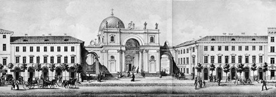
P.S. Ivanov. St.Catherine’s Roman Catholic Church (detail from Panorama of Nevsky Prospect). 1835. Lithograph from the original drawing by Vasilii Sadovnikov (1800–1879). (Saint Petersburg Encyclopedia, accessed 27 January 2023.
Image 128
The Dutch Reformed Church on the Nevskii Prospekt, in which Anna Whistler attended a funeral service for Wilhelmina Elizabeth (Funck) Grootten in December 1846
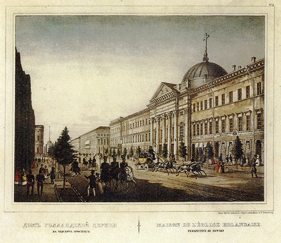
The Building of the Dutch Church on Nevsky Prospekt. 1850s. Lithograph tinted with watercolor. 32 x 51.5 cm. [full resolution image]
Image 129
St. Peter’s Lutheran Church (sometimes called St. Peter and Paul Lutheran Church) on the Nevskii Prospekt, in which Major Whistler and Debo may have heard the testing of a new organ
Peter and Paul Fortress Church, where the Imperial dead are interred, which Anna Whistler took Mary Brennan, Willie, and John Bouttatz to visit in July 1846
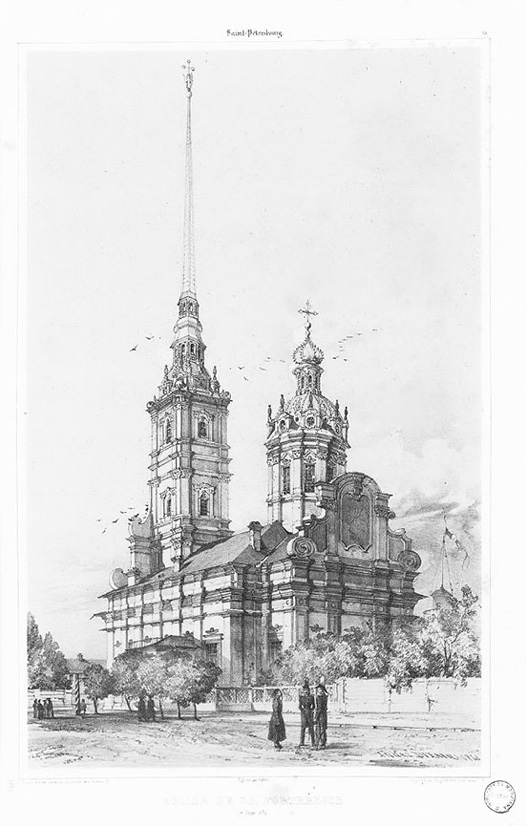
André Durand (1807–1867). Sts. Peter and Paul Churchin the Fortress. 1839. Lithograph. (de Démidoff, Voyage Pittoresque) [full resolution image]
Image 131
The Church in Honor of the Celebration of the Annunciation to the Most Holy Mother of God was being built not far from the Bobrinskii mansion.
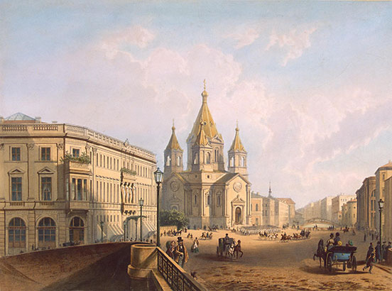
Jean-Louis Jacottet (1806–1880) and Charles Claude Bachelier (fl. c. 1832–1885). View of Blagoveshchenskaya (Annunciation) Square. c. 1850. Colored lithograph from a drawing by Joseph Charlemagne (1824–1870). 44.5 x 61 cm. State Hermitage Museum, St. Petersburg (ERG-7522).
Image 132
Alexander (Palace) Square with the arch of the General Staff Headquarters building, showing the ceremonial entry of Princess Alexandra of Sachsen-Altenburg into St. Petersburg to be betrothed to His Imperial Highness Grand Duke Konstantin Nikolaevich in 1847
Vasilii Sadovnikov (1800–1879). The Ceremonial Ride in Palace Square. 1840s. Watercolor. 20.5 x 29.5 cm. State Hermitage Museum, St. Petersburg (ERR-6418).
Images 133, 134
Anichkov Palace, to which the Imperial family retreated during Lent
Joseph Andreas Weiss. (1814–1887). View of the Anichkov (Nikolai) Palace in St Petersburg. 1843. Watercolor. 22.6 x 22.3 cm. State Hermitage Museum, St. Petersburg (OR-24064).
Vasilii Sadovnikov (1800–1879). View of the Anichkov Palace from the Fontanka River. 1838. Watercolor on paper. 23.2 x 38.2 cm. State Pushkin Museum, Moscow. [full resolution image]
Image 135
The Michael (Mikhailovskii) Palace, the home of His Imperial Highness Grand Duke Mikhail Pavlovich, brother of Nicholas I, in St. Petersburg
Palace of Gd Duke Michael. 1850s. Lithograph from a drawing by Joseph Charlemagne (1824–1870). State Pushkin Museum, Moscow. [full resolution image]
Image 136
Maria (Mariinskii) Palace, the home of Her Imperial Highness Grand Duchess Maria Nikolaevna, eldest daughter of Nicholas I, and of her husband, His Imperial Highness Duke Maximilian-Eugene-Jozef-August-Napoleon Leuchtenberg
The Horse Guards Manege, the Imperial indoor riding range
Gaubert. The Horse Guards Manege, 1834. From a drawing by Alexey Gornostaev (1808–1862). State Museum of the History of St. Petersburg. (Manege Central Exhibition Hall, accessed 30 October 2021).
Image 138
One of the many reviews of the Horse Guard that Anna Whistler, James, and Willie saw during their time in St. Petersburg
The Corps of Pages, in which Nicholas I is said to have offered to educate James and Willie after Major Whistler’s death, was housed in this building.
Agafon Avnatomov (1816–1893) and Nikolai Broese. His Imperial Majesty’s Page Corps. 1858. Lithograph with watercolor; from a drawing by Joseph Charlemagne (1824–1870). 43.3 x 61.2 cm. State Hermitage Museum, St. Petersburg (ERG-6124).
Images 140, 141, 142
The Whistlers left Russia in May 1849 after the death of Major Whistler and did not see the completed Annunciation Bridge.
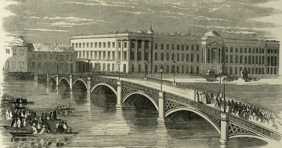
Jean-Louis Jacottet (1806–1880) and Regeme. Annunciation (Nicholas) Bridge. c. 1850. Lithograph from a drawing by Joseph Charlemagne (1824–1870). (A.L. Punin, Arkhitektura Peterburga serediny XIX veka [St. Petersburg Architecture of the Mid-Ninteenth Century] [Leningrad: Lenizdat, 1990], p. 291) [full resolution image]Jean-Louis Jacottet (1806–1880) and Regeme. Annunciation (Nicholas) Bridge from the English Embankment. c. 1850. Tinted lithograph from a drawing by Joseph Charlemagne (1824–1870). (Saint Petersburg Encyclopedia, accessed 27 January 2023).
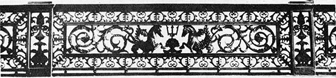
Detail of the railing of the Annunciation Bridge cast by the Baird Iron Works (Bowles, “From the Banks of the Neva,” p. 75) [full resolution image]
Image 143
The interior of the Baird Iron Works that cast railings and statues and built steamships for Neva traffic. Anna Whistler did not like the kind of subsequent wealthy and extravagant social life its profits afforded Mrs. Baird, and tried to avoid accepting her invitations.
An interior view of the Baird works (Bowles, “From the Banks of the Neva,” p. 71) [full resolution image]
Image 144
The Whistlers left Russia in May 1849 after the death of Major Whistler and did not see the completed St. Petersburg–Moscow Railway Passenger Station.
A. Pettsol’t. St. Petersburg Passenger Station of the St. Petersburg–Moscow Railway. 1851. Watercolor. [full resolution image]
Image 145
In 1845, Anna Whistler, Major Whistler, and Debo attended a charity concert for orphans under the patronage of Empress Aleksandra Fyodorovna held in the Assemby Hall of the Nobility
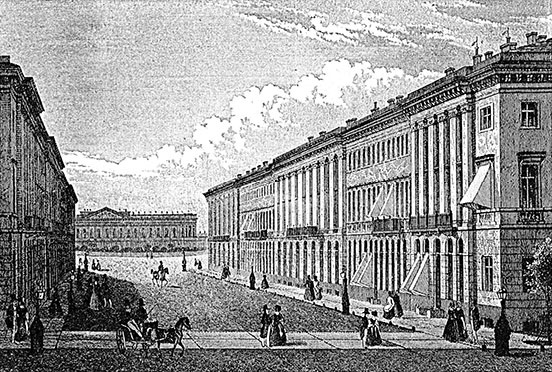
Building of the Assembly Hall of the Nobility on Novo-MikhailovskaiaStreet. (Bozherianov, Nevskii Prospekt, vol. 2, p. 424) [full resolution image]
Image 146
Anna Whistler, Major Whistler, and Debo attended an annual charity event for invalids of the Napoleonic Wars held in the Assemby Hall of the Nobility
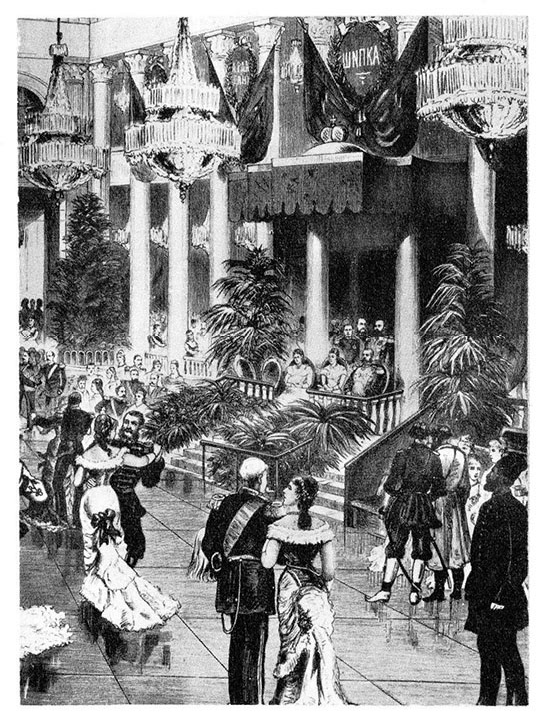
Ball in the Assembly Hall of the Nobility. (Fradkina, Zal Dvorianskogo sobraniia) [full resolution image]
Image 147
Smol’nyi Institute for the Education of Young Noblewomen, where Deborah Whistler heard Clara Schumann play
Ferdinand-Victor Perrot (1808 –1841). View of the Smolny Convent. 1841. Watercolored lithograph on paper. 41.5 x 57.5 cm. State Hermitage Museum, St. Petersburg (ERG-20120).
Image 148
The Summer Palace was located in the Summer Garden, where James and Willie, when pupils of Monsieur Jourdan’s school, played.
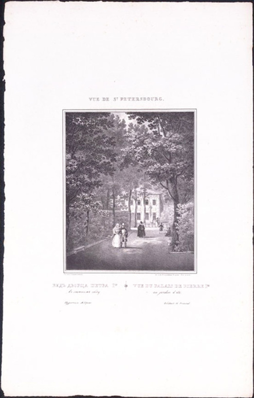
Vasilii Sadovnikov (1800–1879). View of the Palace of Peter I [the Great]. 1833. Lithograph. Russian National Library, St. Petersburg. [full resolution image]
Image 149
Anna Whistler took her half-sister Alicia McNeill to the residence of Count Benkendorf near the Summer Garden to get a ticket of residence.
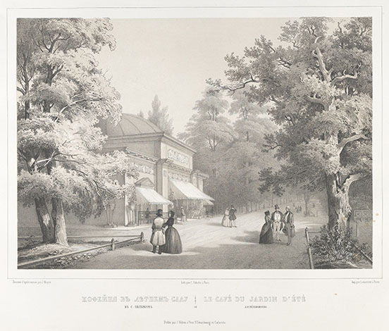
K.K. Schultz. Café in the Summer Garden. c. 1845. Lithograph from an original by Johann Jacob Meyer (1787–1858). (Johann Jacob Meyer, Vues pittoresque des palais et jardins imperiaux aux environs de St. Petersbourg: Dessineés d’aprés nature par J. Meyer et lithographiées par Schultz [St. Petersburg: Velten, 1845–1855]) [full resolution image]
Image 150
A ticket of residence was required for all visitors to St. Petersburg.
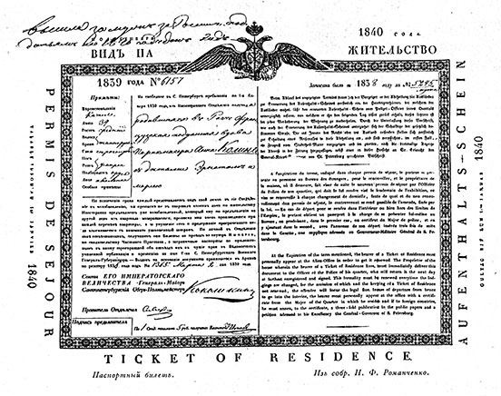
A ticket-of-residence (printed in Russian, English, French, and German). (Bozherianov, Nevskii Prospekt, vol. 2, p. 423. [full resolution image]
Image 151
Mansion of Count Grigorii Grigorievich Kushelev, from a window of which, not facing the Neva River, Ellen Harriet (Hall) Ropes saw a review
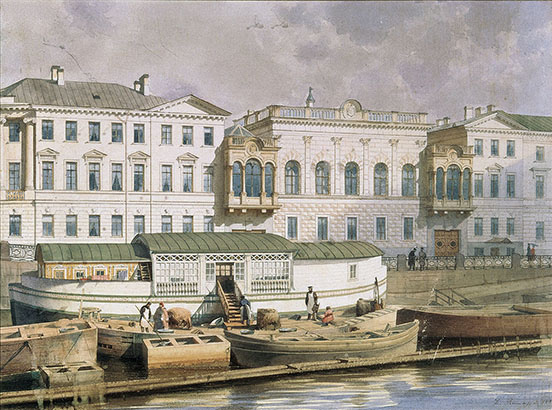
Luigi Premazzi (1814–1891). House of G.G. Kushelev. 1840s. Watercolor on paper. [full resolution image]
Images 152, 153
The Exchange, to which merchants such as William Hooper Ropes went daily to conduct their firms’ business, was situated on the Spit of Vasilievskii Island.
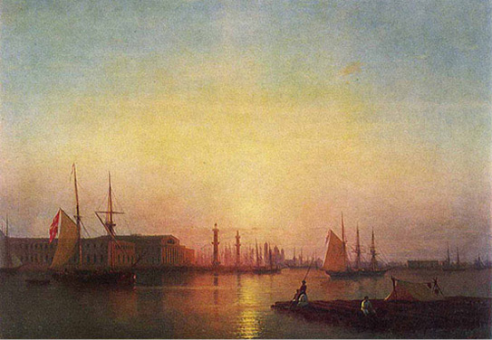
Ivan Konstantinovich Aivazovskii (1817–1900). Evening on the Neva. The Spit of Vasilievskii Island. 1847. Oil on canvas. 81 x 116 cm. State Tret’iakov Gallery, Moscow. [full resolution image]
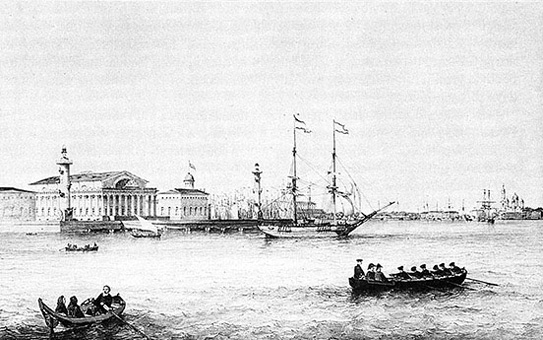
The Spit of Vasilievskii Island, Petersburg Port. Lithograph after a drawing by F. Perrot. (Lotman and Pogosian, Velikosvetskie obedy, p. 76). [full resolution image]